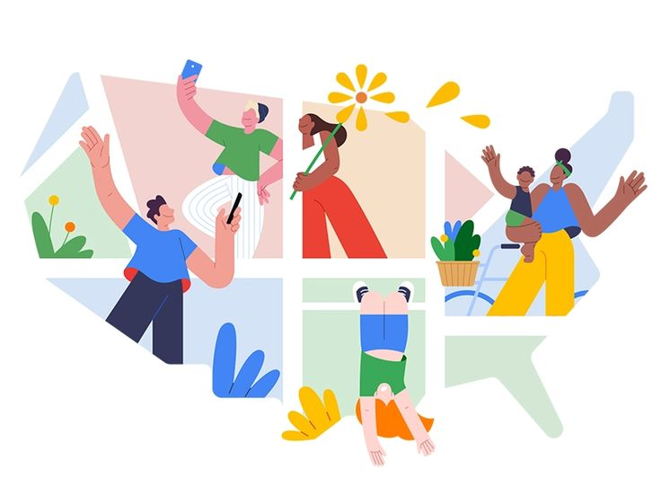
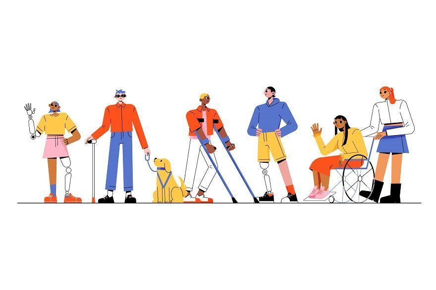
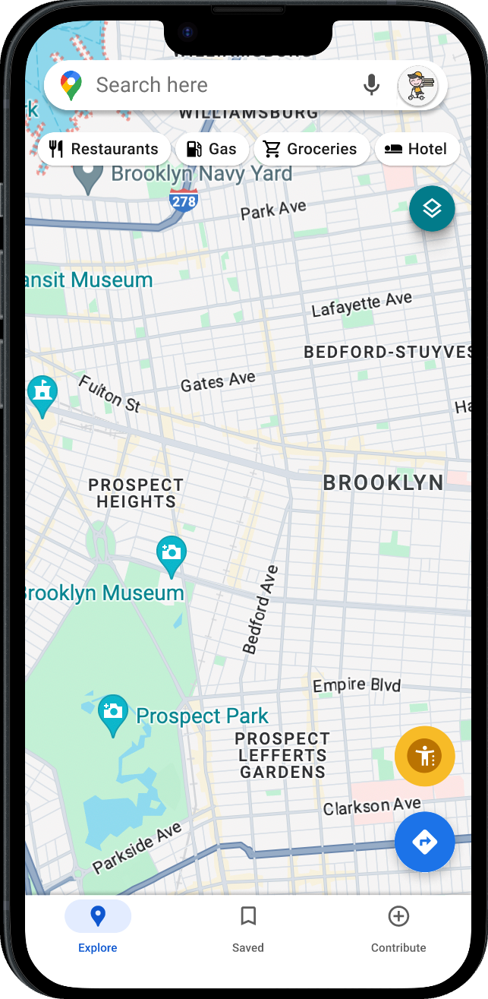
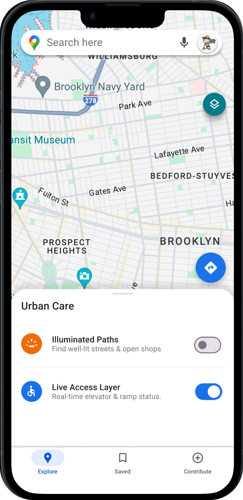
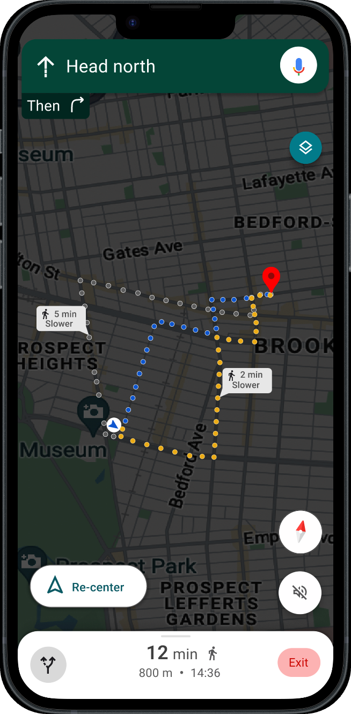
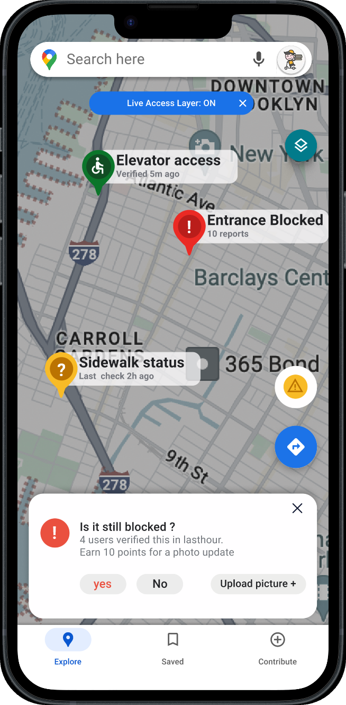
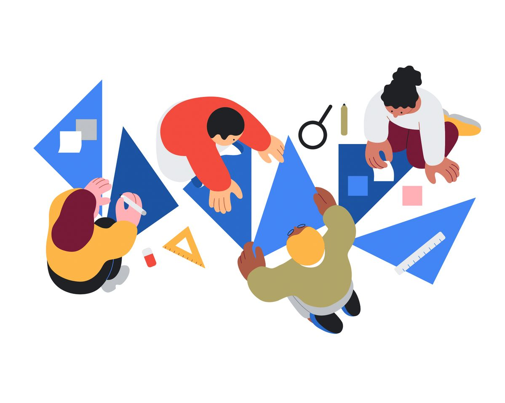
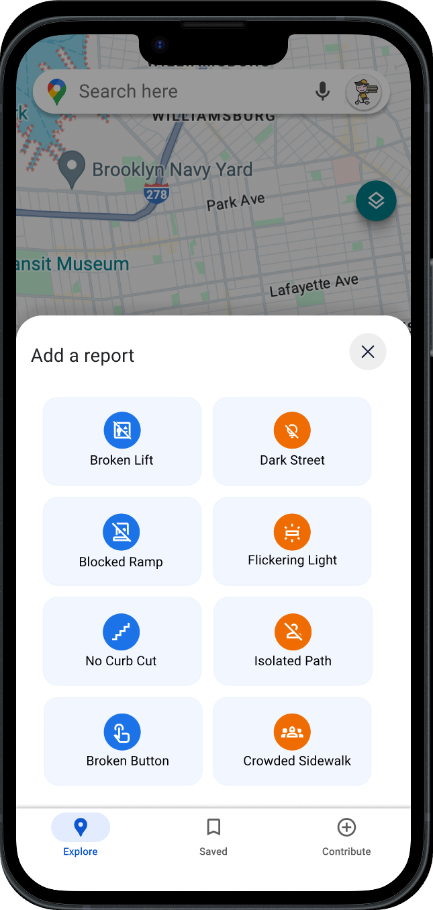

Maps tell you the fastest way — not the safest one.
The Problem
Most maps only show you the fastest way to get somewhere. They don’t tell you if a street is well-lit at night or if an elevator is actually working — which can make people feel unsafe or stuck.
The Objective
To add safety and accessibility features to Google Maps so users can choose routes based on comfort and ease, not just speed.
The Goal
To help everyone — especially people with mobility needs or safety concerns — navigate the world with total peace of mind and confidence.

Two groups, two very different journeys.
I engaged with two distinct user groups to understand the full spectrum of navigation challenges.

The “vibe” of a route
Focused on the psychological impact of lighting and environmental “vibe” on route selection — how safe a street feels, not just how fast it is.
Infrastructure that actually works
Focused on the critical need for live, accurate data about physical infrastructure — ramps, elevators and curb-cuts that may or may not be working right now.
One symbol — the way in.
The Accessibility Anchor
I integrated a single Global Accessibility Symbol directly onto the map — a persistent, one-tap entry point. No digging through nested settings: the inclusive layers live one touch away, always in reach, right where the journey happens.
It’s deliberately the only thing the user has to find. Everything else unfolds after the tap.


Tap it — and two layers unfold.
The Urban Care sheet slides up with two independent toggles.
Illuminated Paths
Find well-lit streets & open shops — a safety-first layer that favours high-visibility walkways for night-time navigation.
Live Access Layer
Real-time elevator & ramp status — highlighting curb-cuts and working infrastructure for wheelchair users and parents with strollers.
Illuminated Paths, in motion
With the layer on, navigation favours well-lit, high-visibility streets. Safer alternatives are offered transparently — each tagged with its honest time cost (“5 min slower”, “2 min slower”) so the user chooses security over speed, knowingly.

Live Access Layer, live
Real-time pins surface elevator access, blocked entrances and sidewalk status — each time-stamped and crowd-verified. A lightweight “Is it still blocked?” prompt keeps the data a self-healing, trustworthy map.

Priority-driven reporting.

The 8-card reporting grid is organised by impact severity. Using F-pattern scanning logic, I positioned “Broken Lift” and “Dark Street” in the primary top-left slots. By prioritising blockers — incidents that physically stop a journey — I ensured high-velocity data collection with zero friction.

Projected success benchmarks.
By shifting focus from speed-based navigation to predictive human certainty, the system is designed to transform Google Maps from a passive utility into an active urban guardian. These are the target impact goals based on the implemented UX logic.
100% path certainty (target)
Complete elimination of “dead-end” routes for mobility-impaired users by integrating live elevator and ramp telemetry.
40% stress reduction (projected)
Per UX research benchmarks, providing “visual certainty” via the Illumination layer is projected to reduce the cognitive “fear-tax” for late-night commuters.
99.9% data integrity (benchmark)
The proximity-triggered community verification loop keeps the map a self-healing ecosystem with real-time accuracy.
<3s reporting velocity
The severity-prioritised grid minimises interaction time, letting a user report a life-altering obstacle in under three seconds.